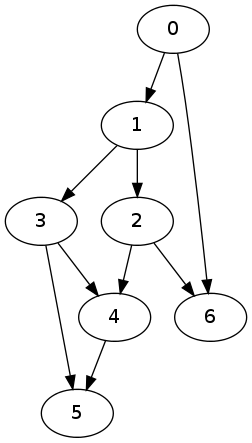

Let G = (V,E) be a directed graph. I will assume that G has no loops, multiple edges or oriented cycles. Today, I will develop an algorithm and the accompanying lisp code which will list all paths between any two given vertices.
To be consistent with my previous posts and lisp code, I will represent an edge as an ordered pair of vertices. For example, the following lisp list
(defparameter G '((0 1) (1 2) (1 3) (3 4) (4 5) (2 4) (3 5) (0 6) (2 6)))
Gwill represent a graph which can be sketched as follows

Because of topological sort I can safely assume that the vertices of the graph I will consider are finite subsets of the set of natural numbers of the form {0, 1, …, n} and that if (i,j) is an edge then i < j.
A path of length n in this context is a sequence of vertices (vi) for i = 0, …, n in which any two consecutive vertices are connected by an edge. Note that since I assumed that the graph is devoid of oriented edges or loops, the length of the maximum path is less than the sizes of E and V.
Here is the pseudo-code for the algorithm which will construct the list of all paths which start at a vertex x in V.
Function Beginning-At
Input: A vertex x and a graph G
Output: The set of all paths starting at x
Initialize: F <- {(x)}
Begin Function
For each edge (x,u) starting at x do
For each path alpha in Beginning-At(u)
Add the concatenation of (x,u) with alpha to F
End for
End for
Return F
End FunctionThe corresponding lisp function is as follows
(defun beginning-at (x G)
(let* ((B (let (A)
(dolist (e G)
(if (equal (car e) x)
(push (cadr e) A)))
A))
(C (loop for e in B append (beginning-at e G))))
(cons (list x)
(mapcar (lambda (e) (cons x e)) C))))
BEGINNING-ATI will test the resulting function
(beginning-at 1 G)
((1) (1 3) (1 3 5) (1 3 4) (1 3 4 5) (1 2) (1 2 6) (1 2 4) (1 2 4 5))Now, I will also need the counterpart ending-at
function. The implementation is easy: look at the opposite graph of
G then find the paths
beginning at the given vertex, and return the reverses of each path.
(defun ending-at (x G)
(mapcar 'reverse (beginning-at x (mapcar 'reverse G))))
ENDING-ATLet me test it
(ending-at 6 G)
((6) (2 6) (1 2 6) (0 1 2 6) (0 6))Now, we are ready to implement the function which will list all paths between a pair of vertices. The idea is simple: the set of all paths from a vertex a to another vertex b is the intersection of all paths starting at a and the set of all paths ending at b.
(defun all-paths (a b G)
(intersection (beginning-at a G)
(ending-at b G)
:test 'equal))
ALL-PATHSLet me test this on some examples
(all-paths 1 4 G)
((1 3 4) (1 2 4))
(all-paths 0 6 G)
((0 6) (0 1 2 6))
(all-paths 4 2 G)
NILNow, let me create a very large example and test this function by finding a large set of all-paths between all sources and all sinks in the graph.
(setf G (remove-if (lambda (x) (<= (cadr x) (car x)))
(remove-duplicates (map 'list
(lambda (x) (list (random 34) (random 40)))
(make-array 480))
:test 'equal)))
((17 28) (2 18) (31 32) (2 29) (9 14) (21 35) (8 32) (15 22) (10 11) (3 10)
(21 26) (3 6) (20 32) (12 22) (6 29) (15 34) (7 37) (5 6) (4 31) (27 34)
(18 32) (19 33) (10 38) (12 15) (22 34) (0 29) (4 32) (4 39) (16 29)
(1 39) (7 21) (4 38) (22 28) (7 34) (29 38) (12 34) (4 17) (10 18) (23 30)
(6 17) (14 33) (6 35) (18 23) (29 36) (13 15) (8 17) (27 38) (24 31)
(20 34) (3 17) (2 30) (3 9) (2 16) (9 33) (11 28) (7 36) (13 39) (21 31)
(3 12) (4 30) (5 27) (3 7) (7 35) (23 37) (1 21) (5 36) (26 37) (5 23)
(0 8) (16 31) (20 36) (14 36) (3 19) (17 24) (19 21) (13 24) (16 33)
(24 29) (19 28) (6 9) (16 39) (3 5) (9 35) (6 33) (29 34) (2 32) (8 38)
(8 21) (10 35) (16 20) (6 21) (17 25) (9 37) (13 20) (21 27) (6 34) (1 18)
(11 22) (11 19) (10 26) (7 9) (12 32) (0 25) (11 31) (9 12) (12 23) (7 38)
(1 7) (12 21) (0 35) (15 27) (16 38) (2 26) (31 33) (4 15) (3 26) (4 21)
(16 17) (19 29) (14 23) (4 24) (30 35) (20 33) (14 30) (0 11) (7 28)
(19 30) (11 33) (2 37) (10 16) (5 14) (30 34) (22 32) (5 17) (15 17)
(8 20) (16 34) (9 21) (7 22) (17 20) (9 15) (29 33) (13 16) (16 27)
(14 16) (18 20) (2 28) (17 26) (20 23) (16 26) (4 14) (16 19) (1 20)
(12 30) (4 12) (24 25) (21 34) (0 10) (1 36) (4 11) (15 18) (24 26) (8 39)
(28 37) (2 3) (2 14) (6 26) (13 17) (11 30) (29 31) (6 11) (26 36) (31 39)
(24 35) (32 36) (1 9) (23 36) (7 18) (2 20) (32 39) (0 22) (2 35) (11 18)
(8 29) (17 23) (0 16) (10 39) (17 21) (3 15) (22 30) (23 31) (10 15)
(18 37) (4 29) (7 15) (23 38) (16 18) (30 38) (30 32) (2 23) (2 22)
(13 26) (33 36) (14 22) (8 36) (8 23) (32 37) (3 34) (20 37) (0 5) (28 33)
(12 37) (2 31) (21 22) (27 30) (4 22) (33 35) (29 39) (20 25) (13 32)
(27 28) (33 39))I am not going to give you an image of the graph, it is large and unintelligible. Now, let me first find the set of sources and sinks: I will need the following functions.
(defun vertices (G)
(sort (remove-duplicates (loop for x in G append x))
'<))
(defun sinks (G)
(let ((A (mapcar 'car G)))
(sort (remove-if (lambda (x) (member x A))
(vertices G))
'<)))
(defun sources (G)
(let ((A (mapcar 'cadr G)))
(sort (remove-if (lambda (x) (member x A))
(vertices G))
'<)))
SOURCESand we get
(sources G)
(0 1 2 4 13)
(sinks G)
(25 34 35 36 37 38 39)The code below will find all paths between every pair of source and sink. I will not bother to print the final result, but suffices to say, the number is large.
real time : 19.055 secs
run time : 19.036 secs
gc count : 17 times
consed : 2128196664 bytes
(time (defparameter result
(loop for x in (sources G)
append (loop for y in (sinks G)
append (all-paths x y G)))))
(length result)
13441